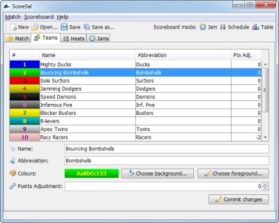

Teams Tab
The main window's Teams tab is used to set up the details of the teams taking part in your event, such as their name and colours. It is also used to apply any necessary adjustments to a team's match score (e.g. to apply penalties).

Score5al's team-editing tab
Team details
To make changes to a team's details, select it in the table and make your changes using the controls at the bottom of the panel. Once finished, press the 'Commit Changes' button - note, your changes don't take effect until you click this button! See below for a description of what each parameter means.
Abbreviation
If a team has a long name, you may optionally set an abbreviated version here, which will be displayed anywhere in the UI where the full name won't fit. For example, if a team's full name is "Bournemouth Bouncing Bombshells", this text is too long to be displayed in the scoreboard window and will be truncated; you should set their abbreviation to a shorter name, such as "Bombshells", which can be displayed instead where necessary.
Colours
Every team has two colours - a background colour and a foreground colour. These colours are used when displaying a team's name in the scoreboard window. You should set the background colour to the team's primary kit colour, and the foreground colour to their secondary kit colour. Hint: for best readability, use highly contrasting colours; dark backgrounds and light foregrounds, and vice versa.
Points Adjustment
This field allows you to apply bonuses or penalties to a team's match score, such as a two-point match score penalty for a penalty box infraction by a jammer. To apply a points bonus, set this to a positive value; to apply a penalty, set this to a negative value. For example, a team that has received two 2-point penalties should have a points adjustment value of -4.